अध्याय 3: चुनाव और प्रतिनिधित्व
लोकतंत्र का अर्थ है जनता का शासन। विशाल जनसंख्या वाले आधुनिक देशों में सभी नागरिक हर फैसले में सीधे भाग नहीं ले सकते, इसलिए प्रतिनिधियों का चुनाव किया जाता है।
- प्रत्यक्ष लोकतंत्र (Direct Democracy): जहां नागरिक बिना किसी प्रतिनिधि के सीधे नीतिगत फैसलों और कानूनों पर मतदान करते हैं (जैसे प्राचीन यूनानी नगर-राज्य और आधुनिक स्विट्जरलैंड के कुछ कैंटन)। इसमें जनमत संग्रह (Referendum) का प्रयोग होता है।
- अप्रत्यक्ष लोकतंत्र (Indirect/Representative Democracy): जहां नागरिक अपने प्रतिनिधियों को चुनते हैं, और वे प्रतिनिधि संसद या विधायिका में बैठकर जनता की ओर से कानून और नीतियां बनाते हैं (जैसे भारत, अमेरिका, ब्रिटेन)।
- चुनाव की भूमिका: चुनाव अप्रत्यक्ष लोकतंत्र को वास्तविक और जवाबदेह बनाने का एकमात्र माध्यम हैं।
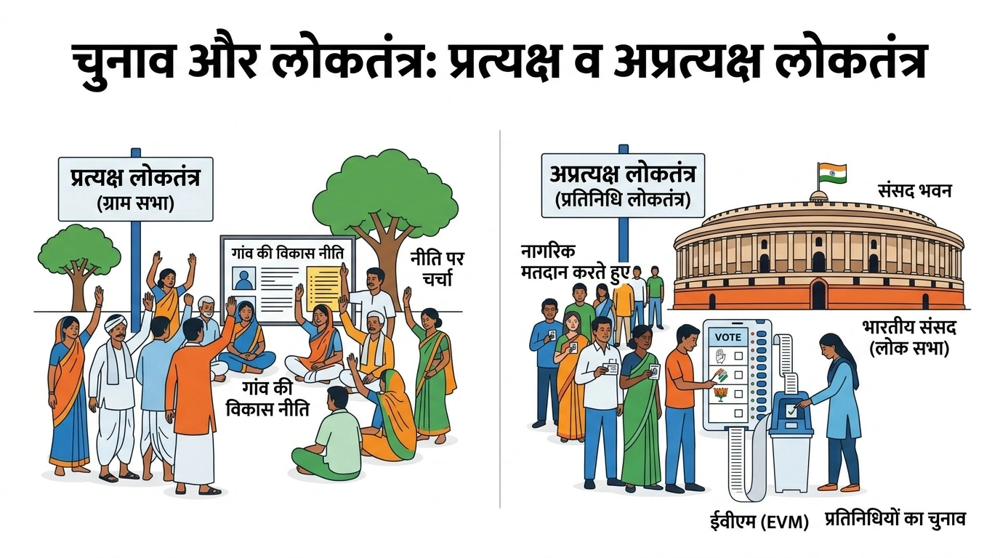
🎨 शिक्षण कार्ड 1: प्रत्यक्ष बनाम अप्रत्यक्ष लोकतंत्र की अवधारणा
मुख्य बिंदु: प्रत्यक्ष लोकतंत्र में नागरिक स्वयं प्रत्यक्ष रूप से निर्णय लेते हैं (जैसे स्विट्जरलैंड), जबकि विशाल जनसंख्या वाले देशों में अप्रत्यक्ष/प्रतिनिधि लोकतंत्र द्वारा शासन चलता है (जैसे भारत)।
संविधान केवल चुनाव की घोषणा नहीं करता, बल्कि यह विस्तृत नियम तय करता है कि चुनाव कौन लड़ेगा, कौन वोट देगा और मतों की गिनती कैसे होगी।
- चुनाव की आवश्यकता: प्रतिनिधियों का चयन करने, शासन की नीतियों को नियंत्रित करने और अकुशल या अलोकप्रिय सरकार को शांतिपूर्ण ढंग से बदलने के लिए।
- संवैधानिक प्रावधान: संविधान का भाग 15 (अनुच्छेद 324-329) स्वतंत्र और निष्पक्ष चुनाव कराने के लिए चुनाव आयोग और नियम तय करता है।
- चुनावों के प्रकार: आम चुनाव (General Elections), मध्यावधि चुनाव (Mid-term Elections), और उपचुनाव (By-elections)।
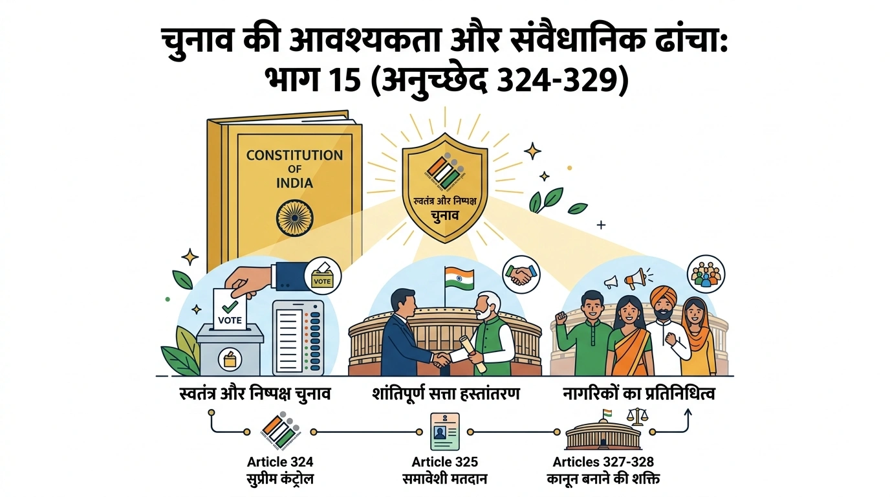
🎨 शिक्षण कार्ड 2: लोकतंत्र में चुनाव की आवश्यकता और संवैधानिक ढांचा
मुख्य बिंदु: संविधान का भाग 15 (अनुच्छेद 324-329) स्वतंत्र व निष्पक्ष चुनाव, मतदाता सूची और सत्ता के शांतिपूर्ण हस्तांतरण के नियम तय करता है।
भारत में लोकसभा और राज्य विधानसभा चुनावों के लिए 'फर्स्ट पास्ट द पोस्ट' (First Past the Post - FPTP) प्रणाली अपनाई गई है।
- FPTP का अर्थ: पूरा देश छोटे-छोटे एक-सदस्यीय निर्वाचन क्षेत्रों (Constituencies) में बांटा जाता है। प्रत्येक क्षेत्र से जिस प्रत्याशी को सबसे अधिक मत मिलते हैं, वह विजयी घोषित होता है। प्रत्याशी को कुल मतों का 50% या बहुमत पाना जरूरी नहीं, बस विरोधियों से एक वोट ज्यादा पाना काफी है।
- 1984 का ऐतिहासिक केस स्टडी (): 1984 के 8वें लोकसभा चुनाव में कांग्रेस पार्टी को 48% वोट मिले, लेकिन FPTP प्रणाली के कारण उसने कुल 543 लोकसभा सीटों में से 415 सीटें (80% से अधिक सीटें) जीतीं। दूसरी ओर, मुख्य विपक्षी दलों को कुल वोटों का 50% से अधिक पाने के बावजूद बहुत कम सीटें मिलीं।
- वोट व सीट का अंतर: FPTP प्रणाली में वोटों के प्रतिशत और जीती गई सीटों के प्रतिशत में भारी अंतर हो सकता है।
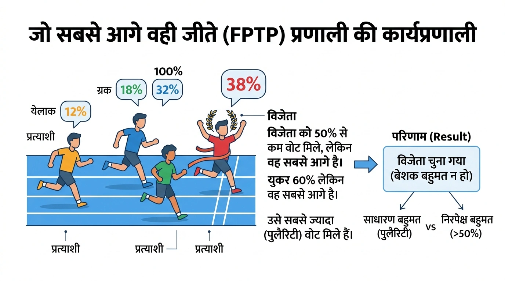
🎨 शिक्षण कार्ड 3: 'जो सबसे आगे वही जीते' (FPTP) प्रणाली की कार्यप्रणाली
मुख्य बिंदु: FPTP प्रणाली में जिस प्रत्याशी को अन्य सभी प्रत्याशियों से एक भी मत अधिक मिलता है, वह विजयी घोषित हो जाता है; 50% बहुमत अनिवार्य नहीं होता।
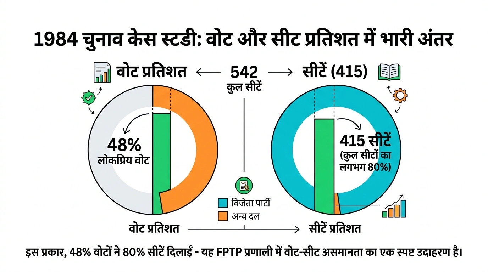
🎨 शिक्षण कार्ड 4: 1984 लोकसभा चुनाव केस स्टडी (वोट बनाम सीट का भारी अंतर)
मुख्य बिंदु: 1984 के चुनाव में कांग्रेस पार्टी को 48% वोट मिले लेकिन सीटें 80% (415 सीटें) हासिल हुईं, जो FPTP प्रणाली में सीटों के भारी बहुमत का प्रत्यक्ष उदाहरण है।
संविधान निर्माताओं ने जटिल समानुपातिक प्रणालियों के बजाय FPTP को चुनने के पीछे मुख्य व्यावहारिक कारण रखे:
- 1. सरलता: यह प्रणाली इतनी सरल है कि सामान्य निरक्षर या कम पढ़े-लिखे मतदाता भी इसे आसानी से समझ सकते हैं। उन्हें केवल पार्टी या उम्मीदवार के नाम के आगे बटन दबाना होता है।
- 2. स्पष्ट विकल्प: मतदाताओं के सामने उम्मीदवारों और राजनीतिक दलों का स्पष्ट विकल्प होता है।
- 3. क्षेत्र और प्रतिनिधि का सीधा संबंध: मतदाता अपने निर्वाचन क्षेत्र के प्रतिनिधि (MP/MLA) को व्यक्तिगत रूप से जानता है और समस्याओं के लिए सीधे जवाबदेह ठहरा सकता है।
- 4. स्थायी सरकार: FPTP प्रणाली आमतौर पर किसी एक बड़े दल या गठबंधन को स्पष्ट बहुमत प्रदान करती है, जिससे सरकार में स्थिरता आती है।
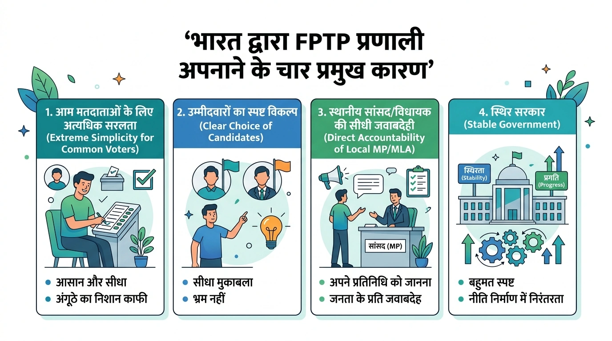
🎨 शिक्षण कार्ड 5: भारत द्वारा FPTP प्रणाली अपनाने के ऐतिहासिक व व्यावहारिक कारण
मुख्य बिंदु: सरल मतदान प्रक्रिया, सामान्य मतदाता के लिए समझने में आसान, सरकार को राजनीतिक स्थिरता प्रदान करना और मतदाता-प्रतिनिधि के बीच सीधा संबंध।
समानुपातिक प्रतिनिधित्व (PR) प्रणाली: इसमें राजनीतिक दलों को चुनाव में मिले वोटों के कुल प्रतिशत के अनुपात में सीटें आवंटित की जाती हैं।
- इजराइल का मॉडल (List System): पूरा देश एक ही निर्वाचन क्षेत्र माना जाता है। प्रत्येक दल अपनी प्रत्याशियों की सूची (Party List) जारी करता है। दल को जितने प्रतिशत वोट मिलते हैं (न्यूनतम 3.25% थ्रेशोल्ड वोट आवश्यक), उसे संसद (Knesset) में उतनी ही प्रतिशत सीटें मिलती हैं।
- नीदरलैंड का मॉडल: संपूर्ण देश एक निर्वाचन क्षेत्र होता है और मतों के राष्ट्रीय प्रतिशत के आधार पर पार्टी सूची से प्रतिनिधि चुने जाते हैं।
- मुख्य विशेषता: इसमें कोई भी वोट व्यर्थ नहीं जाता और हर छोटे राजनीतिक दल को उसकी जनप्रियता के अनुपात में प्रतिनिधित्व मिलता है।
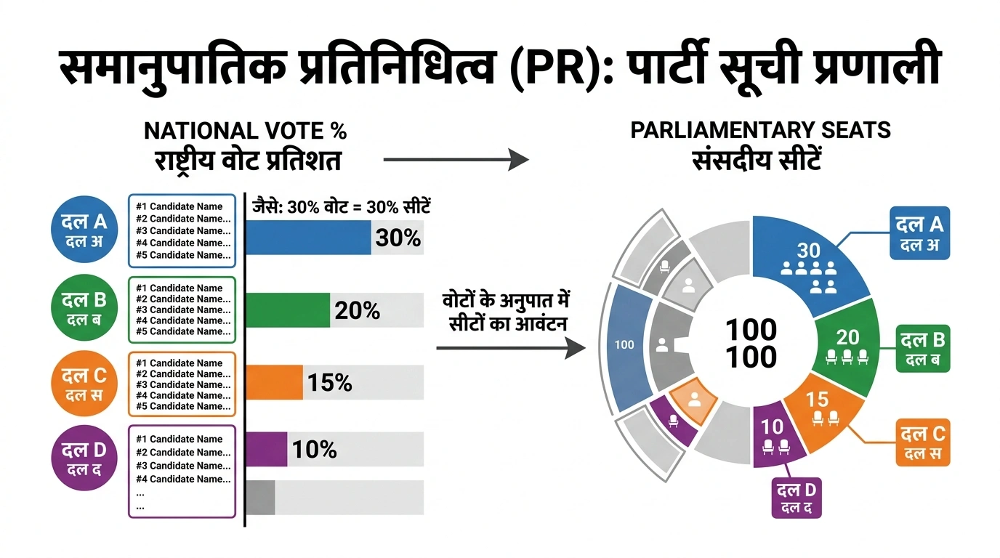
🎨 शिक्षण कार्ड 6: समानुपातिक प्रतिनिधित्व (PR) प्रणाली की सूची पद्धति
मुख्य बिंदु: पूरा देश या बड़ा क्षेत्र एक निर्वाचन क्षेत्र बनता है; दल को प्राप्त मत प्रतिशत के अनुपात में ही संसद में सीटें आवंटित की जाती हैं (जैसे इज़राइल, नीदरलैंड)।
FPTP और समानुपातिक प्रतिनिधित्व (PR) प्रणाली के मध्य मुख्य संवैधानिक अंतर निम्नलिखित हैं:
- निर्वाचन क्षेत्र: FPTP में देश छोटे-छोटे एक-सदस्यीय क्षेत्रों में बंटा होता है; PR में पूरा देश या बड़ा क्षेत्र बहु-सदस्यीय निर्वाचन क्षेत्र होता है।
- मतदाता का चुनाव: FPTP में मतदाता व्यक्ति (प्रत्याशी) को वोट देता है; PR में मतदाता मुख्यतः पार्टी (दल) को वोट देता है।
- सीटों का आवंटन: FPTP में सबसे ज्यादा वोट पाने वाला एक प्रत्याशी जीतता है; PR में पार्टी को प्राप्त वोटों के प्रतिशत के अनुपात में सीटें मिलती हैं।
- बहुमत की आवश्यकता: FPTP में विजयी प्रत्याशी को 50%+1 वोट पाना आवश्यक नहीं है; PR में दल को वोट प्रतिशत के हिसाब से सीटें मिलती हैं।
- उदाहरण: FPTP - भारत, ब्रिटेन, कनाडा; PR - इजराइल, नीदरलैंड, जर्मनी।
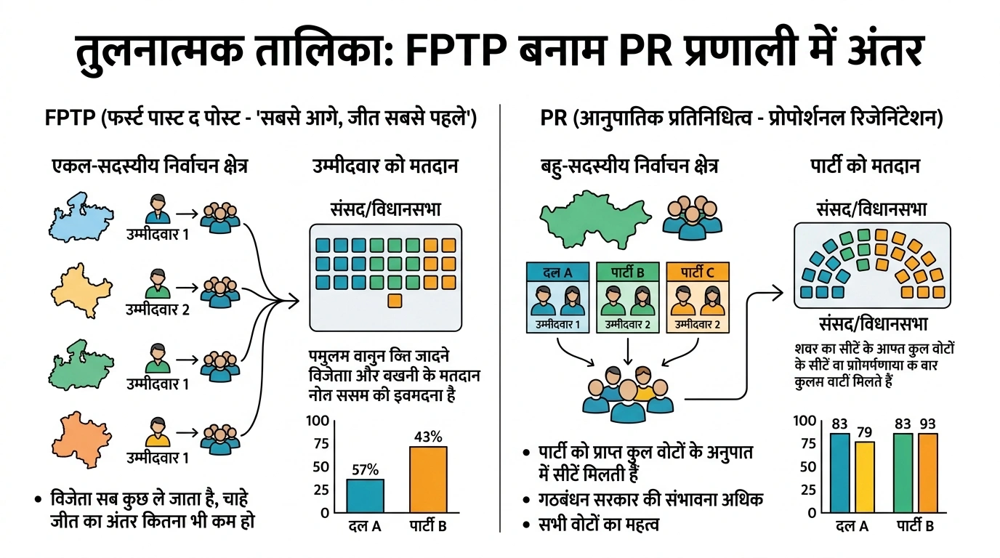
🎨 शिक्षण कार्ड 7: FPTP बनाम समानुपातिक प्रतिनिधित्व (PR) की व्यापक तुलना तालिका
मुख्य बिंदु: क्षेत्रीय आधार, मतपत्र का स्वरूप, परिणाम निर्धारण का आधार और सरकार के स्थायित्व के मुख्य बिंदुओं का तुलनात्मक चार्ट।
भारत ने प्रत्यक्ष आम चुनावों के लिए FPTP को अपनाया, लेकिन अप्रत्यक्ष चुनावों (राज्यसभा, विधान परिषद, राष्ट्रपति और उपराष्ट्रपति) के लिए समानुपातिक प्रतिनिधित्व की एकल संक्रमणीय मत प्रणाली (Single Transferable Vote - STV) को अपनाया।
1. राज्यसभा चुनाव और कोटा निर्धारण सूत्र:
राज्यसभा चुनाव में राज्य के विधायक (MLAs) मतदान करते हैं। प्रत्येक मतदाता प्रत्याशी को अपनी वरीयता (1st, 2nd, 3rd Preference) देता है। जीतने के लिए किसी प्रत्याशी को एक निश्चित न्यूनतम कोटा हासिल करना होता है:
राज्यसभा चुनाव: न्यूनतम कोटा फॉर्मूला
जीतने के लिए आवश्यक कोटा =
(
कुल डाले गए वैध मत
कुल चुनी जाने वाली सीटें + 1
)
+ 1
उदाहरण:
राजस्थान में 4 राज्यसभा सीटों के लिए 200 विधायक वोट डालते हैं:
कोटा =
(
200
4 + 1
)
+ 1
=
(
200
5
)
+ 1
= 40 + 1 =
41 मत
2. राष्ट्रपति का चुनाव (अनुच्छेद 54 व 55):
राष्ट्रपति का चुनाव एक निर्वाचक मंडल (Electoral College) द्वारा indirect STV प्रणाली से होता है, जिसमें संसद (लोकसभा + राज्यसभा) के निर्वाचित सदस्य और राज्य विधानसभाओं के निर्वाचित सदस्य भाग लेते हैं।
राष्ट्रपति चुनाव: मत मूल्य एवं कोटा फॉर्मूला
(क) एक विधायक (MLA) के मत का मूल्य:
एक विधायक के मत का मूल्य =
राज्य की कुल जनसंख्या (1971 जनगणना)
राज्य विधानसभा के कुल निर्वाचित सदस्य
×
1
1000
(ख) एक सांसद (MP) के मत का मूल्य:
एक सांसद के मत का मूल्य =
सभी राज्यों के कुल विधायकों के मतों का कुल मूल्य
संसद के कुल निर्वाचित सदस्य (लोकसभा + राज्यसभा)
(ग) राष्ट्रपति चुनाव का जीत कोटा (Winning Quota):
विजयी कोटा =
(
कुल डाले गए वैध मतों का मूल्य
2
)
+ 1
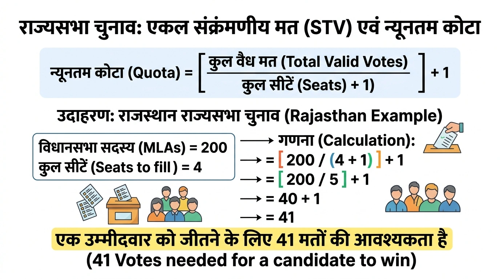
🎨 शिक्षण कार्ड 8: राज्यसभा में एकल संक्रमणीय मत (STV) एवं कोटा गणना सूत्र
मुख्य बिंदु: जीतने के लिए आवश्यक निश्चित मत कोटा = [कुल वैध मत / (विजयी सीटें + 1)] + 1।
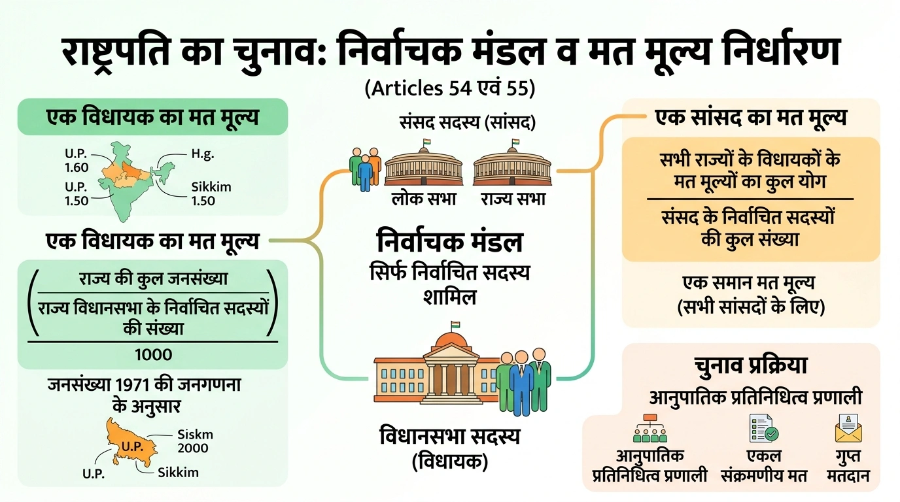
🎨 शिक्षण कार्ड 9: राष्ट्रपति चुनाव में विधायक (MLA) एवं सांसद (MP) का मत मूल्य सूत्र
मुख्य बिंदु: जनसंख्या और संघवाद के संतुलन के आधार पर प्रत्येक राज्य के विधायक तथा संसद के सभी निर्वाचित सांसदों का मत मूल्य तय किया जाता है।
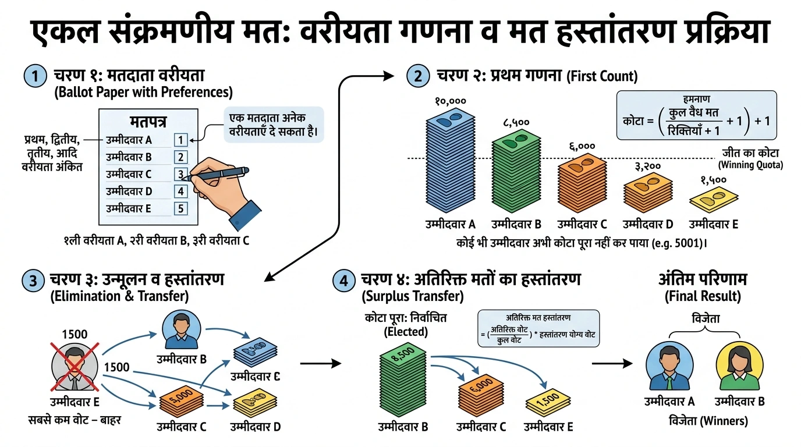
🎨 शिक्षण कार्ड 10: वरीयता मत गणना और मतों का हस्तांतरण चक्र (STV)
मुख्य बिंदु: प्रथम वरीयता से कोटा पूरा न होने पर न्यूनतम मत वाले प्रत्याशी को बाहर कर उसके द्वितीय वरीयता मत शेष प्रत्याशियों में ट्रांसफर किए जाते हैं।
3. मतों के हस्तांतरण (STV) की प्रक्रिया:
- प्रथम वरीयता की गिनती: पहले केवल 1st Preference के वोट गिने जाते हैं। यदि किसी को निर्धारित कोटा मिल जाए, तो वह विजयी घोषित होता है।
- पुनर्गणना व हस्तांतरण: यदि किसी को पहली गिनती में कोटा न मिले, तो सबसे कम वोट पाने वाले प्रत्याशी को प्रतियोगिता से बाहर कर दिया जाता है और उसके मतपत्रों पर अंकित 2nd Preference के वोट अन्य प्रत्याशियों को ट्रांसफर कर दिए जाते हैं। यह प्रक्रिया कोटा प्राप्त होने तक जारी रहती है।
प्रत्येक चुनाव से पूर्व देश को जनसंख्या के आधार पर समान आकार के निर्वाचन क्षेत्रों में विभाजित किया जाता है।
- परिसीमन आयोग: राष्ट्रपति द्वारा गठित एक स्वतंत्र निकाय (Delimitation Commission) जिसमें सर्वोच्च न्यायालय के सेवानिवृत्त न्यायाधीश और चुनाव आयुक्त शामिल होते हैं।
- मुख्य कार्य: प्रत्येक राज्य में जनसंख्या के अनुपात में निर्वाचन क्षेत्रों की सीमाओं का पुनर्निर्धारण करना तथा SC/ST सीटों का आरक्षण तय करना।
- न्यायिक समीक्षा से परे: परिसीमन आयोग के फैसलों को किसी अदालत में चुनौती नहीं दी जा सकती।
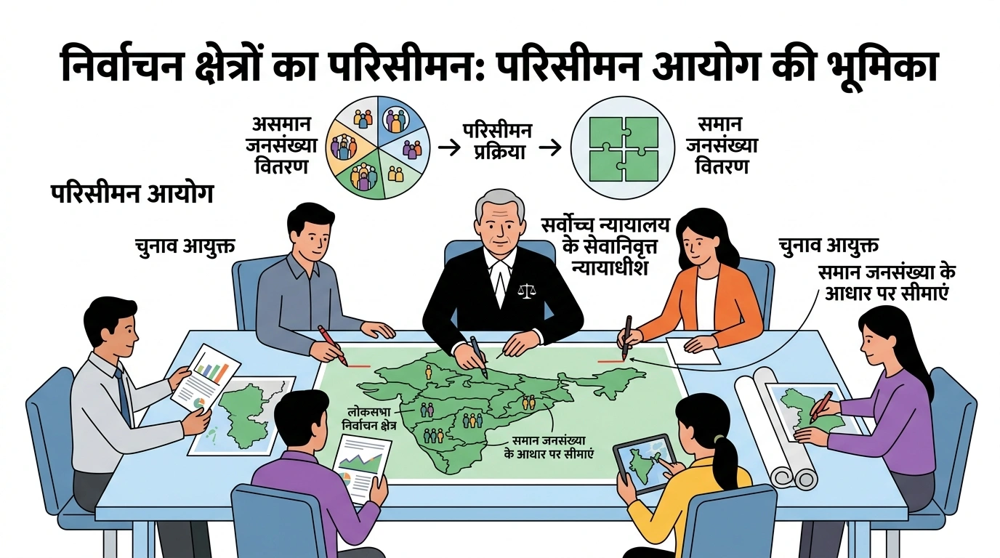
🎨 शिक्षण कार्ड 11: परिसीमन आयोग (अनुच्छेद 82) और निर्वाचन क्षेत्र पुनर्गठन
मुख्य बिंदु: जनसंख्या परिवर्तन के अनुरूप समान प्रतिनिधित्व सुनिश्चित करने हेतु सुप्रीम कोर्ट के सेवानिवृत्त न्यायाधीश की अध्यक्षता में परिसीमन आयोग सीमाओं का निर्धारण करता है।
FPTP प्रणाली में डर था कि कमजोर सामाजिक वर्ग कभी जीत नहीं पाएंगे, इसलिए संविधान ने आरक्षित निर्वाचन क्षेत्रों की व्यवस्था की।
- आरक्षण का स्वरूप: आरक्षित निर्वाचन क्षेत्र में वोट सभी नागरिक डालते हैं, लेकिन उम्मीदवार केवल उसी आरक्षित वर्ग (SC या ST) का हो सकता है।
- सीटों की संख्या: वर्तमान में देश में 543 लोकसभा सीटों में से 84 सीटें अनुसूचित जाति (SC) के लिए और 47 सीटें अनुसूचित जनजाति (ST) के लिए आरक्षित हैं (कुल 131 सीटें)।
- पृथक निर्वाचिका बनाम आरक्षित सीट: अंग्रेजों द्वारा शुरू की गई पृथक निर्वाचिका (Separate Electorate) को खारिज कर आरक्षित क्षेत्रों की साझा व्यवस्था अपनाई गई।
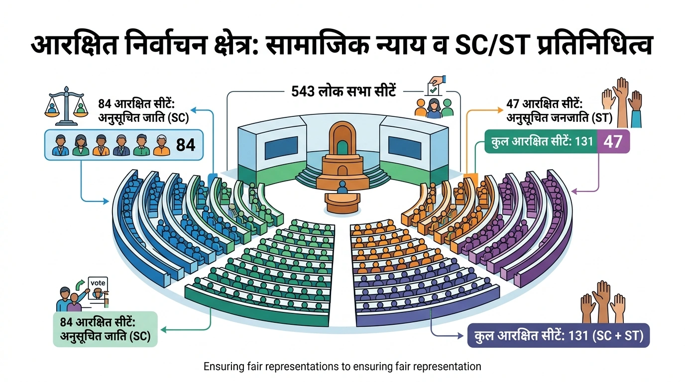
🎨 शिक्षण कार्ड 12: आरक्षित निर्वाचन क्षेत्र (SC/ST आरक्षण - अनुच्छेद 330 व 332)
मुख्य बिंदु: लोकसभा में अनुसूचित जातियों (SC) के लिए 84 और अनुसूचित जनजातियों (ST) के लिए 47 निर्वाचन क्षेत्र आरक्षित हैं ताकि वंचित वर्गों को उचित भागीदारी मिले।
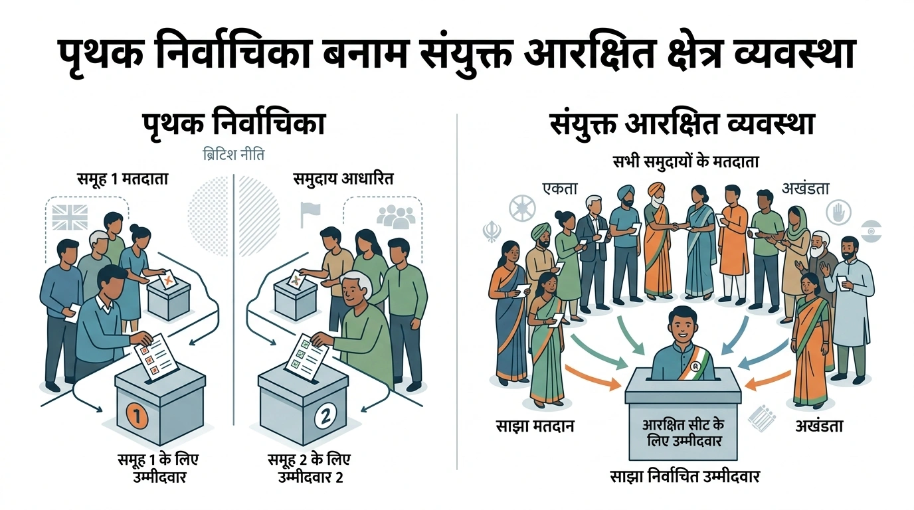
🎨 शिक्षण कार्ड 13: पृथक निर्वाचिका बनाम संयुक्त आरक्षित निर्वाचिका का ऐतिहासिक अंतर
मुख्य बिंदु: अंग्रेजों की फूट डालो नीति (पृथक निर्वाचिका) के विपरीत स्वतंत्र भारत ने संयुक्त आरक्षित प्रणाली अपनाई जहाँ उम्मीदवार आरक्षित वर्ग का होता है लेकिन वोट सभी नागरिक मिलकर डालते हैं।
भारतीय संविधान का अनुच्छेद 324 स्वतंत्र एवं निष्पक्ष चुनाव कराने के लिए 'भारत निर्वाचन आयोग' (Election Commission of India) की स्थापना करता है।
- संरचना: आयोग में एक मुख्य निर्वाचन आयुक्त (CEC) और दो अन्य निर्वाचन आयुक्त होते हैं। 1993 से यह 3-सदस्यीय बहु-सदस्यीय निकाय (Multi-member body) है।
- नियुक्ति व कार्यकाल: आयुक्तों की नियुक्ति राष्ट्रपति द्वारा की जाती है। इनका कार्यकाल 6 वर्ष या 65 वर्ष की आयु (जो भी पहले हो) तक होता है।
- पद की सुरक्षा: मुख्य निर्वाचन आयुक्त को केवल संसद द्वारा महाभियोग (Impeachment) जैसी कठिन प्रक्रिया द्वारा ही हटाया जा सकता है, जिससे निष्पक्षता बनी रहे।
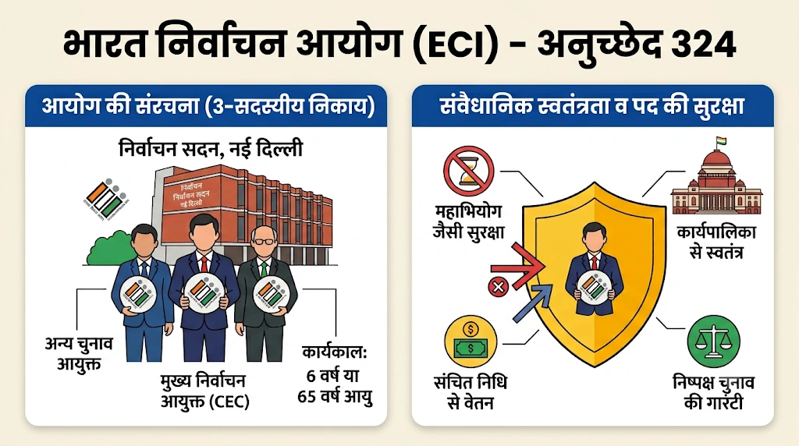
🎨 शिक्षण कार्ड 14: भारत निर्वाचन आयोग (ECI): अनुच्छेद 324, संरचना व स्वतंत्रता
मुख्य बिंदु: मुख्य चुनाव आयुक्त (CEC) व दो चुनाव आयुक्तों का बहु-सदस्यीय आयोग; निर्वाचन सदन नई दिल्ली; कार्यपालिका के दबाव से मुक्त रखने के लिए संवैधानिक संरक्षण।
चुनाव आयोग भारत में पूरी चुनावी प्रक्रिया का सर्वोच्च नियंत्रक है।
- 1. मतदाता सूचियां तैयार करना: मतदाता सूचियों (Electoral Rolls) को अद्यतन करना और मतदाता पहचान पत्र (EPIC) जारी करना।
- 2. चुनाव तिथियों की घोषणा: चुनाव की अधिसूचना, नामांकन, मतदान और मतगणना की तिथियों का निर्धारण।
- 3. राजनीतिक दलों को मान्यता: नए राजनीतिक दलों को पंजीकृत करना और उन्हें चुनाव चिन्ह (Election Symbols) आवंटित करना।
- 4. आदर्श आचार संहिता (Model Code of Conduct): चुनाव के दौरान निष्पक्षता बनाए रखने के लिए आचार संहिता लागू करना तथा उल्लंघन पर सख्त कार्रवाई करना।
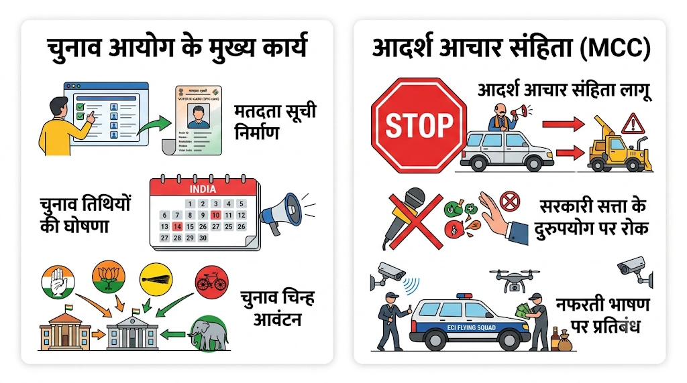
🎨 शिक्षण कार्ड 15: चुनाव आयोग के प्रमुख कार्य, शक्तियां व आदर्श आचार संहिता
मुख्य बिंदु: मतदाता सूची तैयार करना, चुनाव तिथियों की घोषणा, राजनीतिक दलों को मान्यता व चुनाव चिन्ह का आवंटन, और आचार संहिता का कड़ाई से अनुपालन।
भारत में सार्वभौमिक वयस्क मताधिकार लोकतंत्र का सबसे बड़ा स्तंभ है।
- मताधिकार की आयु: 1989 से पूर्व मताधिकार की न्यूनतम आयु 21 वर्ष थी। 61वें संविधान संशोधन (1989) द्वारा इसे घटाकर 18 वर्ष कर दिया गया।
- समानता: जाति, धर्म, लिंग या संपत्ति के बिना सभी 18 वर्ष से ऊपर के भारतीय नागरिकों को 'एक व्यक्ति, एक वोट' का अधिकार प्राप्त है।
- चुनाव लड़ने की न्यूनतम आयु: लोकसभा व विधानसभा चुनाव के लिए 25 वर्ष; पंचायत व नगर निकाय के लिए 21 वर्ष; और राज्यसभा व विधान परिषद के लिए 30 वर्ष।
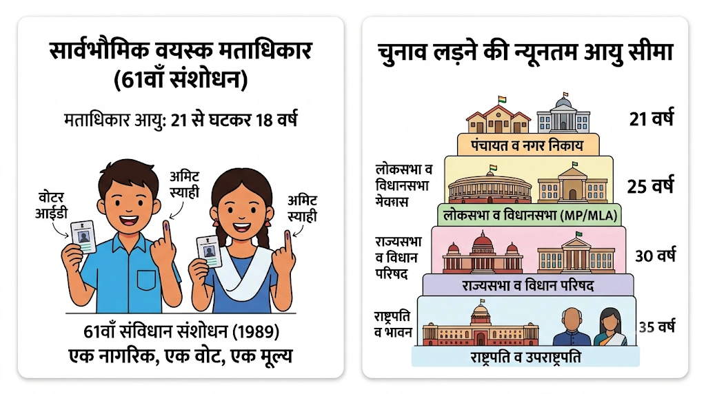
🎨 शिक्षण कार्ड 16: सार्वभौमिक वयस्क मताधिकार: 61वाँ संविधान संशोधन (18 वर्ष)
मुख्य बिंदु: 1989 में 61वें संशोधन द्वारा मतदान की न्यूनतम आयु 21 वर्ष से घटाकर 18 वर्ष की गई; धर्म, जाति या लिंग के भेदभाव के बिना प्रत्येक वयस्क को एक समान मत का अधिकार।
भारतीय लोकतंत्र की सफलता के बावजूद चुनावी प्रक्रिया में कई गंभीर बुराइयां मौजूद हैं:
- 1. धनबल का प्रभाव: चुनावों में बेहिसाब पैसा पानी की तरह बहाया जाता है, जिससे गरीब उम्मीदवार पिछड़ जाते हैं।
- 2. राजनीति का अपराधीकरण: आपराधिक पृष्ठभूमि वाले व्यक्तियों का चुनाव लड़ना और जीतना।
- 3. जाति और धर्म का दुरुपयोग: वोट बैंक की राजनीति के लिए साम्प्रदायिक और जातिगत भावनाएं भड़काना।
- 4. वंशवाद व महिला प्रतिनिधित्व की कमी: राजनीतिक दलों में आंतरिक लोकतंत्र का अभाव और संसद में महिलाओं की कम संख्या।
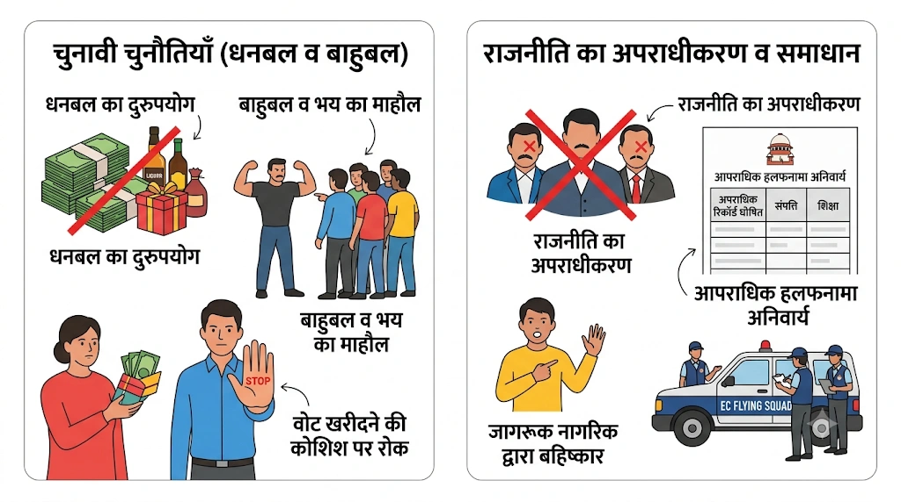
🎨 शिक्षण कार्ड 17: चुनावी चुनौतियाँ: धनबल, बाहुबल और राजनीति का अपराधीकरण
मुख्य बिंदु: चुनावों में अवैध धन का भारी प्रयोग, बाहुबल और आपराधिक छवि वाले उम्मीदवारों का वर्चस्व लोकतंत्र की शुचिता के लिए गंभीर खतरा है।
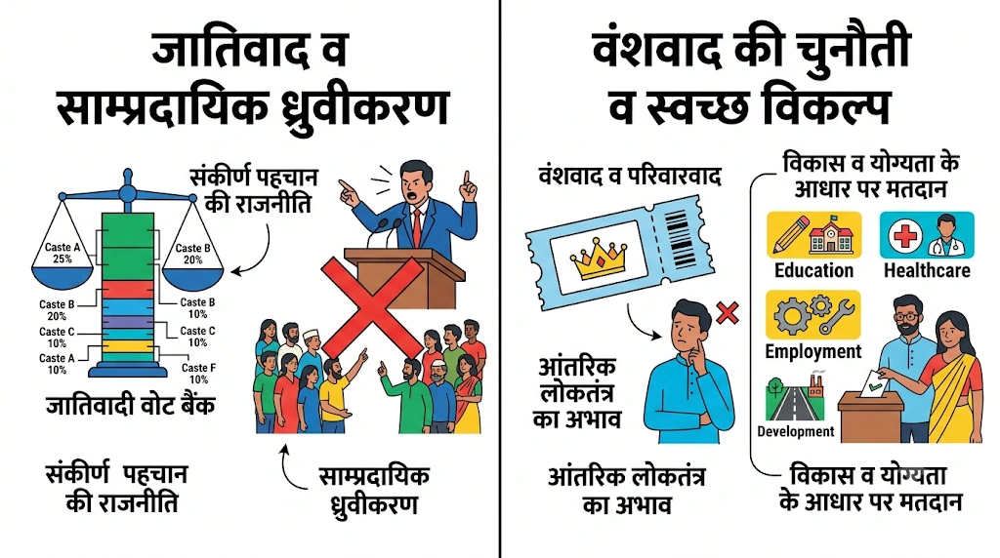
🎨 शिक्षण कार्ड 18: जातिवाद, साम्प्रदायिक ध्रुवीकरण और वंशवाद की चुनावी चुनौतियाँ
मुख्य बिंदु: जातिगत व साम्प्रदायिक आधार पर मतों का ध्रुवीकरण और राजनीतिक दलों में आंतरिक लोकतंत्र की कमी, जिसे जागरूक मतदाता ही दूर कर सकते हैं।
भारतीय चुनाव प्रणाली को अधिक पारदर्शी और निष्पक्ष बनाने के लिए निरंतर सुधार किए गए हैं:
- 1. EVM और VVPAT: इलेक्ट्रॉनिक वोटिंग मशीन (EVM) और वोटर वेरिफिएबल पेपर ऑडिट ट्रेल (VVPAT) मशीन के प्रयोग से फर्जी मतदान पर रोक लगी और पारदर्शकता बढ़ी।
- 2. NOTA विकल्प: 'उपरोक्त में से कोई नहीं' (None of the Above) विकल्प से मतदाताओं को नापसंदगी जताने का अधिकार मिला।
- 3. आपराधिक शपथ पत्र: उम्मीदवारों के लिए संपत्ति, देनदारियों और आपराधिक मुकदमों का हलफनामा (Affidavit) देना अनिवार्य किया गया।
- 4. चुनाव सुधार सिफारिशें: गोस्वामी समिति, इंद्रजीत गुप्त समिति और चुनाव आयोग द्वारा निरंतर सुधार प्रस्ताव।
🔴 LIVE SIMULATOR • इंटरैक्टिव शिक्षण मॉडल
(नीचे 'पॉज़', 'प्ले' और 'धीमी गति' से समझें)
📸 एनिमेटेड GIF संदर्भ (Google Docs कॉपी हेतु):
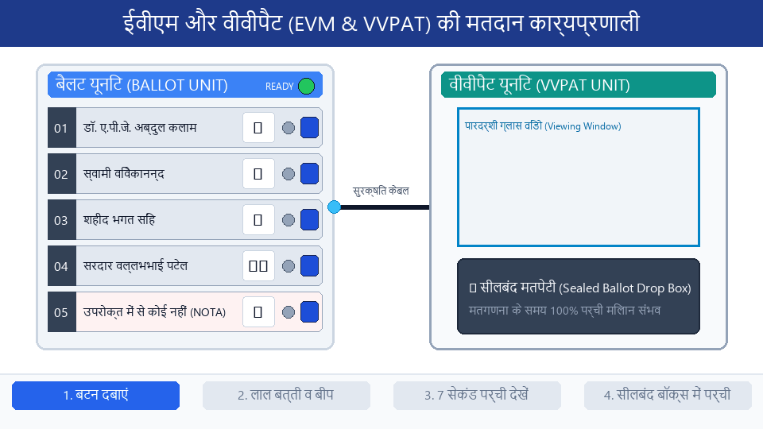
⚡ सजीव एनिमेशन व सिमुलेटर: EVM और VVPAT की पारदर्शी मतदान प्रक्रिया
मुख्य बिंदु: EVM का नीला बटन दबाते ही VVPAT मशीन में 7 सेकंड तक पर्ची दिखती है और बीप की आवाज के साथ बॉक्स में गिरती है, जिससे मतदान 100% पारदर्शी और विश्वसनीय रहता है। ऊपर सिमुलेटर में 'पॉज़ करें', 'धीमी गति (0.5x)' और चारों चरणों पर क्लिक करके कक्षा में विस्तार से समझा सकते हैं।
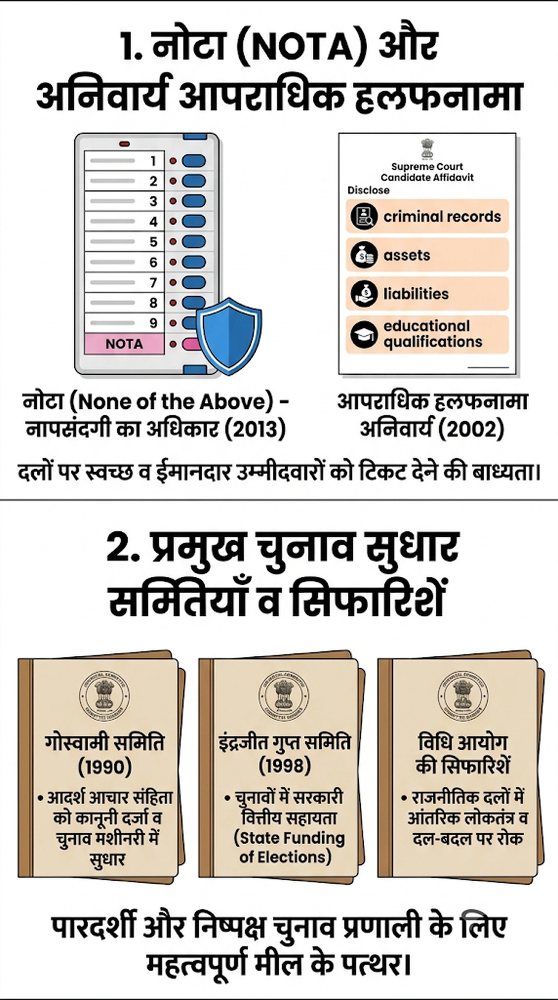
🎨 शिक्षण कार्ड 19: चुनावी सुधार: नोटा (NOTA), आपराधिक हलफनामा व सुधार समितियाँ
मुख्य बिंदु: सुप्रीम कोर्ट के निर्देशानुसार NOTA (2013), प्रत्याशियों द्वारा आपराधिक व संपत्ति का अनिवार्य हलफनामा (2002), गोस्वामी समिति (1990) और इंद्रजीत गुप्त समिति (1998) की सिफारिशें।
भारत में चुनाव केवल सरकार चुनने का जरिया नहीं हैं, बल्कि यह 140 करोड़ नागरिकों का लोकतंत्र में अटूट विश्वास प्रकट करने का महापर्व है।
- शांतिपूर्ण सत्ता परिवर्तन: 1952 के प्रथम आम चुनाव से लेकर आज तक भारत में शांतिपूर्ण और लोकतांत्रिक तरीके से सत्ता का हस्तांतरण हुआ है।
- वैश्विक मिसाल: भारत का निष्पक्ष चुनाव ढांचा पूरी दुनिया के लोकतांत्रिक देशों के लिए एक मिसाल और प्रेरणा स्रोत है।
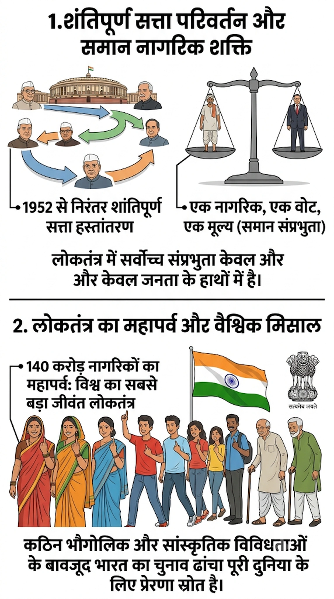
🎨 शिक्षण कार्ड 20: निष्कर्ष: लोकतंत्र का महापर्व और शांतिपूर्ण सत्ता परिवर्तन
मुख्य बिंदु: 1952 से निरंतर शांतिपूर्ण सत्ता हस्तांतरण, 140 करोड़ नागरिकों का विश्व का सबसे बड़ा जीवंत लोकतंत्र — एक नागरिक, एक वोट, एक मूल्य की वैश्विक मिसाल!